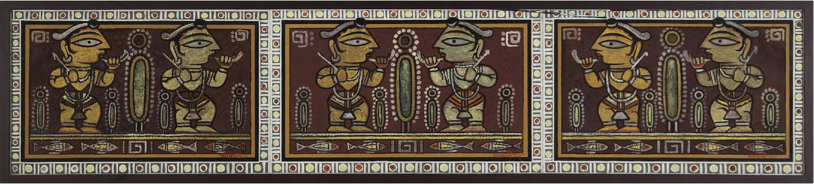
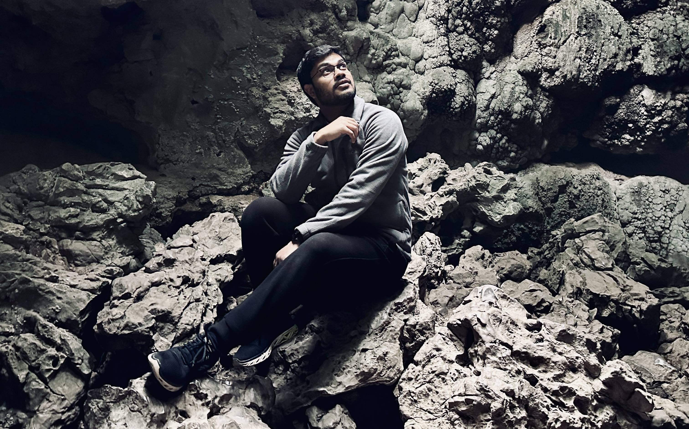

Bio



For context, this photograph dates back to Dec'24 from my visit to Mawsmai Caves, Cherrapunji.
| Coffee | ||
| Chocolate |
न विधिं ग्रसते प्रज्ञा प्रज्ञां तु ग्रसते विधिः ।
विधिपर्यागतानर्थान् प्राज्ञो न प्रतिपद्यते ॥
I was born, raised and toughened in Guwahati, Assam where I tried my best to absorb the rich culture, ethos and the ways of the mountains. During my school life, through both action and words, I identified myself as a quizzer. Achieved and defended my claim on national finals of several running quizzing championships for three back-to-back years and I still carry the respect for professional quizzers for who they are and what they do. After spending two formative and rigorous years under the hood of 'Andhra-style' JEE coaching, I finally left the city in 2019 and have only returned to it sporadically ever since. For my undergraduate studies, I attended IISER-Bhopal, where I had the privilege of learning from exceptional mentors and forming lasting connections with incredible peers, each of whom has played a role in shaping the person I am today. I spent 5 years there, slowly discovering how much I liked to learn math.
Soon after chapter-Bhopal, I joined the Computer Science dept at Ashoka University as Teaching Fellow in 2024. The professional exposure I received and the praxis I cultivated for the craft of teaching mathematics during my time there, continues to be of paramount value to me.
I am an applied math researcher. My academic journey has been shaped by curiosity, structured reasoning and a belief that true understanding is built in layers. I hold a firm belief that education is as much about the refinement of thought as it is about the mastery of the subject. Beyond research, I find great fulfillment in teaching, where I strive to cultivate not just knowledge but a sense of wonder for mathematical ideas.
I cannot say with certainty what kind of life I want for myself, only that I will recognize it when I find it. Outside of academia, my interests include the following.
I am an avid reader and a passionate chess newbie. Although the reading proclivity originated after an accidental exposure to Dan Brown's work, the relationship with chess started with a naive attempt to project an elite lifestyle! Subconsciously, every year I try to read at least one book a month, only to realise the brutal way time works on this planet. Although I use a personal Notion database page to organise/track my reading and learning,
I find immense pleasure in declaring myself a coffee elitist. Both the inception and propagation of this caffeine lifestyle are due to my time at IISERB. My all time favourites include the Monsooned Malabar by Starbucks Reserve, Mahseer by KC Roasters and the Arabica Peaberry blend by Devan's. Both 'Cafe Coffee Day' and 'Blue Tokai' outlets, at IISERB and Ashoka University campuses respectively, have significant mention in my financial statements of relevant timelines!
Academia and Hodophilia will get you places! It made me fly around in the coordinates marked in
Still figuring it out, but yes